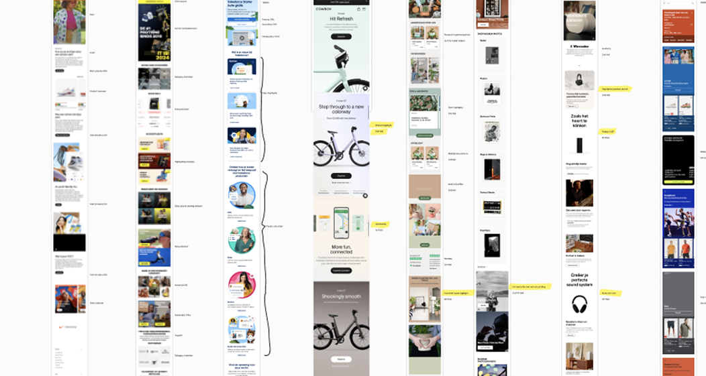
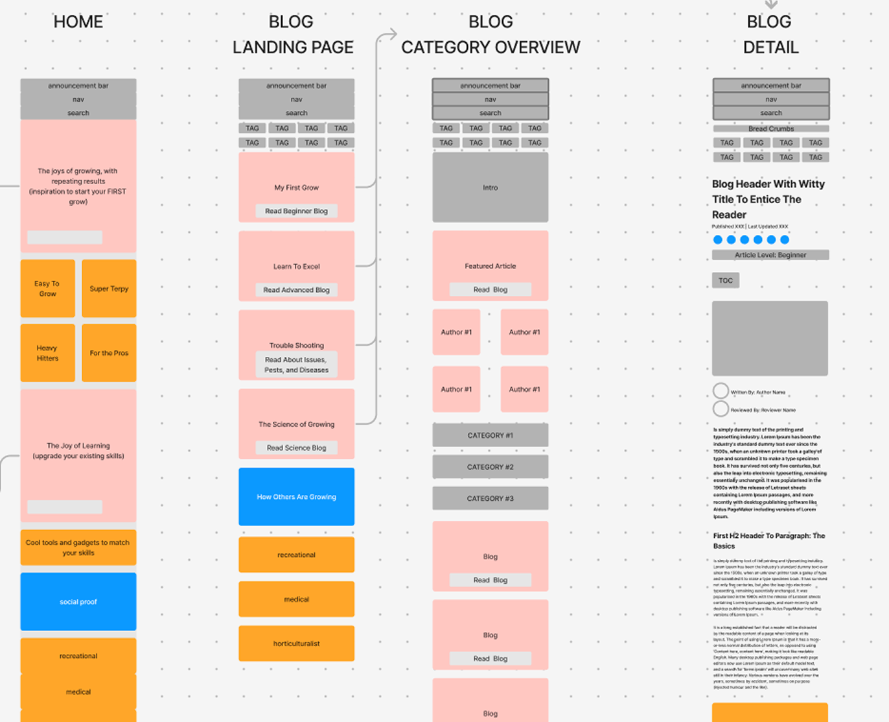
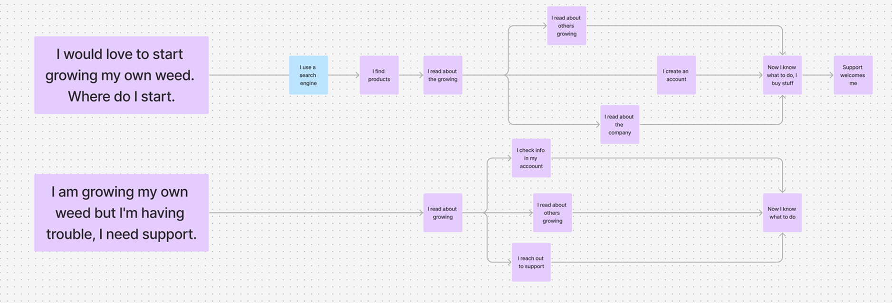
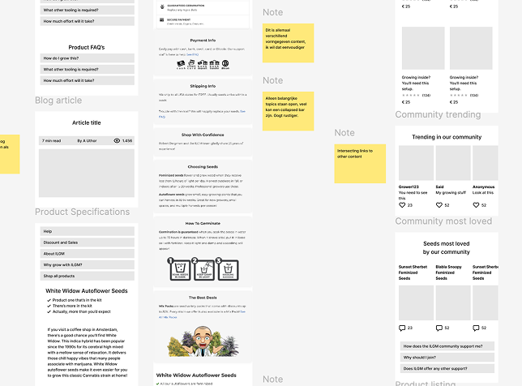

Phase 1: analysis
How do you get to 1 + 1 = 3
In order to have the content and commerce team see where I'd like to go, I set up workshops. For exploration. To find out how others in the market approach this - creating a journey merging these intentions.

This gave us space to develop our own approach — one that combined ‘why’, ‘how’, and ‘what’ into a coherent narrative aimed at both insight and revenue. The team gradually moved away from simply stacking CTAs, dumping endless product lists, or publishing meandering longreads. Instead, we began crafting deliberate online stories that made users fall in love with the product — and want to buy it.
Phase 2: journey design
The next step was to cross-check everything against the actual use cases the products are meant to solve. This meant moving beyond page structure and into journey design — enabling users to create their own story using the company’s products and services. You can’t predict exactly how a user will move from insight to purchase — but you do know they should be able to.

Phase 3: testing

Testing turned out to be surprisingly insightful — not just confirming our assumptions, but expanding our perspective. The journey-based approach proved solid, and we gained a deeper understanding of users’ lives, needs, and expectations. It became clear there was still plenty of room to improve, both in terms of experience and the product itself.